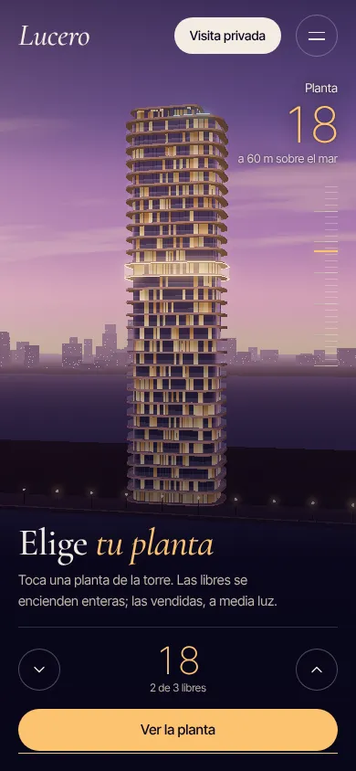
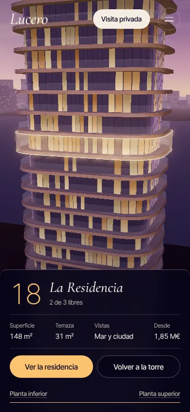
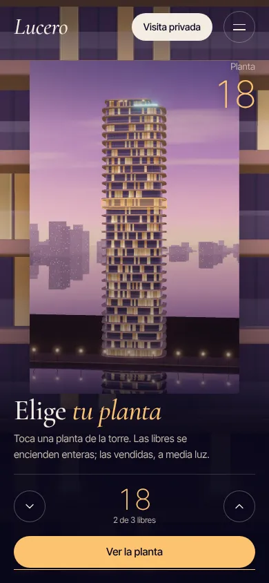
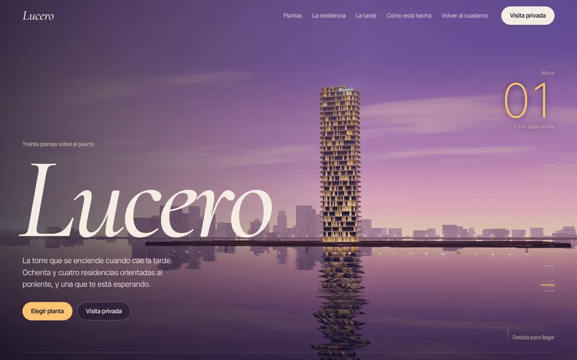
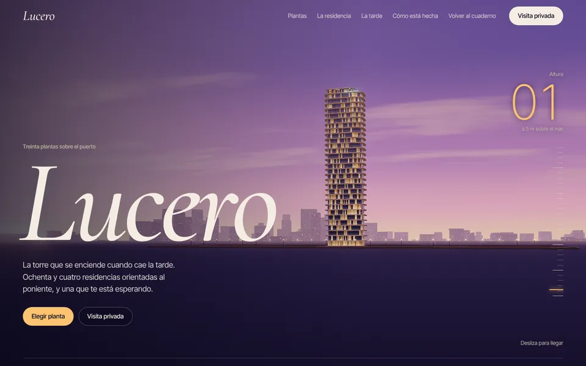
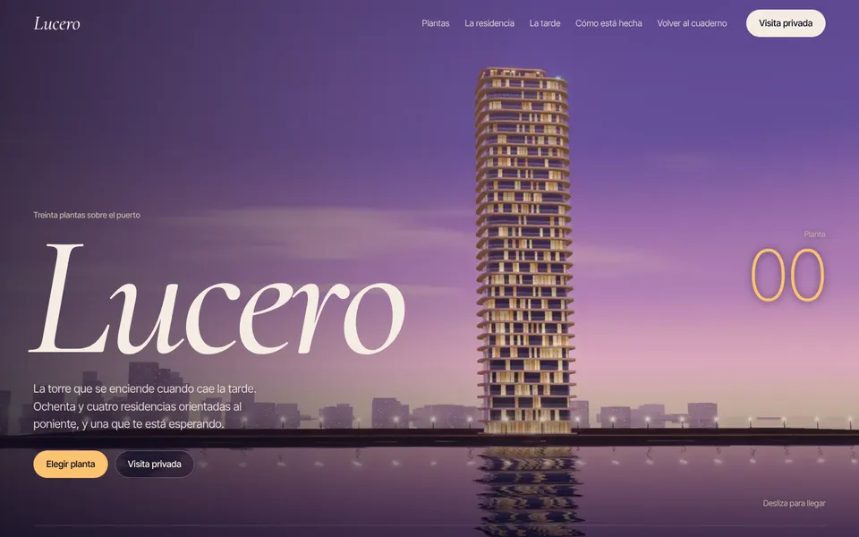

En el proyecto 3 la torre era una película: 120 fotogramas renderizados de antemano que el scroll pasaba uno a uno. Era bonita, pero solo se podía mirar. Lucero es la misma idea llevada al tiempo real: la torre se dibuja en tu pantalla, así que la cámara puede ir donde quieras, cada planta responde al ratón o al dedo y la ficha de un piso se pega a su fachada en 3D.
Esta lección desmonta la web pieza a pieza: qué archivo hace qué, el código que importa, las decisiones de diseño, qué cambia en el móvil, cuánto pesa y cuánto cuesta pintarla, y cuándo te conviene más la versión en fotogramas.
Mapa de la web y archivos
Seis secciones. Las dos primeras comparten un único escenario fijo con un único canvas: primero vuelas, después eliges. Separarlas en dos canvas habría duplicado la escena y gastado un contexto WebGL que necesitamos para la residencia.
- El vuelo
Del agua a la azotea y de vuelta a la torre entera. Recorrido propio con
3D·2CatmullRomCurve3, capítulos por tramos y contador de planta que sigue la altura de la cámara. - Elige tu planta
La torre se queda quieta y se puede tocar. Raycast contra un volumen invisible,
3D·5highlight(), vuelo a la planta y ficha anclada al 3D. - La residencia
La maqueta del piso con números anclados a cada estancia. Se carga al acercarte y comparte Three.js con la torre.
3D·4 - Una tarde
Tres horas, tres imágenes. Retícula editorial alterna y revelado con
06animation-timeline: view(). - Frase
Una banda champán que corta el ritmo. El único bloque de color plano de la página.
Color - Visita
Formulario de una columna con la planta que hayas elegido ya seleccionada.
12
El modo se decide antes de descargar nada
Lo primero que hace main.js es elegir entre tres modos. Lo importante es el orden: decide y después importa. Three.js pesa 731 KB sin comprimir; si el equipo no tiene WebGL, no tiene sentido descargarlo para luego tirarlo.
La sonda de WebGL crea un canvas, pide el contexto y lo libera con WEBGL_lose_context. Si no lo liberas, la sonda ocupa uno de los pocos contextos que el navegador permite y, en algunos móviles, la torre no llega a arrancar. Y el parámetro ?modo= no es un truco de desarrollo que se olvida: es como vas a enseñarle al cliente las tres versiones sin cambiar de teléfono.
Un recorrido de cámara con criterio de encuadre
torre3d.js trae un recorrido por defecto, pero acepta una función path(progress, camera, look) que lo sustituye. La de Lucero define siete planos clave. Lo interesante es cómo se describen: no dicen «mira al punto (−38, 46, 0)», dicen «pon el centro de la torre en el tercio derecho».
Cada plano tiene una posición de cámara C, un punto que importa T y dónde quieres que caiga ese punto en pantalla, sx y sy, de −1 a 1. La función lookFor desplaza el punto de mira lo justo para que T acabe ahí con el campo de visión y la proporción de ese momento.
Así el mismo plano funciona a 1440 × 900 y a 390 × 844. Aun así, en vertical hay un segundo juego de planos (tall): la torre centrada y alta, porque abajo están los textos.
El vertical no es el horizontal recortado. Con fov 55 y la torre centrada en la mitad superior (sy: 0.22), el pulgar y los textos tienen la mitad de abajo para ellos. Prueba siempre el plano final en un teléfono: es el que más tiempo se ve.
Las posiciones y los puntos de mira van en dos CatmullRomCurve3 en modo 'centripetal', que no hace bucles raros cuando dos puntos están muy cerca. El suavizado no lo pones tú: la torre ya persigue el progreso con un lerp del 8 % por fotograma, así que no hace falta el scrub de GSAP. Juega con el encuadre en esta versión reducida:
sx en 0 la torre queda centrada y el titular choca con ella. A partir de 0.2 se aparta sola, y si cambias el tamaño de la ventana sigue en su sitio: la cuenta usa el fov y la proporción de cada momento. No hay bucle de animación: se pinta solo cuando mueves un control.Siete planos, no veinte. Cada plano clave es un «momento» con su texto: llegada, la torre crece, al pie, la fachada, las últimas plantas, la azotea y la torre entera. Si un tramo del recorrido no tiene nada que contar, sobra. Y el último plano es el más importante: es donde la cámara se para y el usuario empieza a tocar, así que se diseña como una portada, con aire para el panel.
Plantas que se iluminan
Para saber qué planta tocas no hace falta un objeto por planta. Basta un volumen invisible con la forma de la torre y una cuenta: la altura del impacto dividida por la altura de planta.
El resaltado tiene dos capas. highlight(f, f) enciende todas las ventanas de esa planta desde el shader de la torre. Pero con la torre a 200 metros eso son cuatro píxeles más cálidos, y no se lee. Por eso Lucero añade un anillo: dos contornos con color por encima de 1 (que el bloom convierte en halo) y una banda translúcida aditiva. Las plantas vendidas se resaltan a media luz y con un contorno frío: se ven, pero no invitan.
vector.project(camera) y se pasa de −1…1 a píxeles. En la landing la ficha hace lo mismo, pero eligiendo el punto más a la derecha del contorno para que la línea guía salga de la fachada.En el móvil, ¿qué pasa si escuchas pointerdown en el canvas para elegir planta?
- Nada:
pointerdownyclickson lo mismo en táctil. - Cada vez que el usuario empieza a hacer scroll con el dedo sobre la torre, elige una planta sin querer.
- El raycast no funciona con eventos táctiles.
El escenario ocupa toda la pantalla, así que el dedo se apoya en la torre para hacer scroll. click solo llega si el dedo no se ha movido: un toque es un toque y un arrastre es scroll. Por eso Lucero usa click para elegir y pointermove solo con pointerType === 'mouse' para el hover.
Volar a la planta y anclar la ficha
Al elegir una planta, la cámara deja el recorrido y vuela hacia su fachada. El truco es no tener dos sistemas de cámara peleándose: la misma función path calcula siempre la pose del recorrido y, si hay un vuelo activo, mezcla entre «de dónde vengo» y «a dónde voy».
Tres detalles que hacen que se sienta bien:
- Un bucle propio solo mientras dura el vuelo. La torre pinta bajo demanda; durante el segundo y medio del vuelo, un
requestAnimationFramellama ainvalidate()y se apaga al llegar. - La ficha entra cuando la cámara casi ha llegado (950 ms), no al hacer clic. Si aparece antes, el ojo no sabe si mirar la tarjeta o el viaje.
- La ficha se recoloca en cada fotograma pintado con
project(): si cambias el tamaño de la ventana o la cámara aún se mueve, la línea guía sigue saliendo de la planta.
Nada de fichas flotantes: en vertical la ficha es una hoja inferior a todo el ancho y la cámara coloca la planta en la mitad superior (sy: 0.32). El contador de la derecha se oculta mientras la ficha está abierta, porque la ficha ya lleva el número. Los botones «Planta inferior» y «Planta superior» miden 44 px de alto: así recorres la torre sin volver a apuntar.
La residencia y el presupuesto de contextos
El proyecto 3 cargaba landing/js/residencia.min.js: un paquete de 579 KB que trae su propia copia de Three.js, porque allí no había otra. En Lucero la torre ya ha cargado Three, así que importamos el código fuente, landing/src/residencia.js, y el import map hace que su import 'three' apunte a la misma copia.
residencia.min.js en el proyecto 3 (148 KB comprimido)
residencia.js en Lucero: el mismo código, sin Three dentro
copia de Three.js en la página (con el paquete eran 2 y la consola avisaba)
contextos WebGL como máximo: la torre y la residencia, y nunca pintan a la vez
Un paquete con todo dentro es lo correcto cuando el 3D es una pieza aislada. En cuanto la página tiene su propio Three, el paquete es peso duplicado y dos instancias que no se entienden (Three avisa con «Multiple instances of Three.js being imported»). Regla: una página, un Three, un import map.
Cada canvas se pausa solo: la torre con un IntersectionObserver sobre el escenario y con visibilitychange; la residencia, con el suyo. Sobre la maqueta hay seis números HTML anclados con residence.project(id), que se recolocan en cada fotograma mientras la sección se ve. En el móvil son los objetivos de toque: un círculo de 44 px es mucho más fácil de acertar que una estancia de dos centímetros.
Decisiones de diseño
Lucero es pariente de Vésper, no su copia. Comparten lo que hace que una torre al atardecer se sienta cara (noche violeta, crema, luz cálida, una serif elegante), y cambian lo suficiente para ser otra marca.
| Vésper (proyecto 3) | Lucero (proyecto 4) | Por qué | |
|---|---|---|---|
| Fondo | Noche 17% .05 292 | Noche más honda 14% .04 285 | El 3D trae su propio color; un fondo más oscuro deja que el cielo sea el protagonista |
| Acento | Ámbar 80% .13 68 | Champán 85% .12 75 | Más claro y menos naranja: se separa del ámbar de las ventanas del shader |
| Voz | Instrument Serif recta | Cormorant cursiva | Más caligráfica, más «hotel»; con el 3D detrás pide trazos finos que no compitan |
| Cifras | Newsreader 300 | Inter Tight 200, tabulares | Números de instrumento: el contador se lee como un altímetro |
| Momento | La llegada (fotogramas) | Tocar una planta | Lo que el tiempo real permite y la película no |
El champán solo aparece en lo que cuenta: el número de planta, el anillo de la planta activa, el botón principal y las palabras en cursiva que rematan cada frase. La banda champán de la frase es la única vez que el acento se convierte en superficie, y por eso funciona como pausa. Si el acento estuviera en los enlaces, las líneas y los iconos, la planta encendida dejaría de destacar.
Texto sobre 3D siempre con un velo diseñado, no con una sombra de texto a ciegas: un degradado lateral en escritorio (donde vive el texto) y uno inferior en vertical, más uno superior suave para que el menú se lea sobre una losa blanca. El 3D se mueve y cambia de brillo: el contraste tiene que aguantar en el peor fotograma, no en la captura bonita.
Escritorio frente a móvil
La tabla de siempre, con una fila nueva que en el proyecto 3 no existía: la calidad del render. Una escena en tiempo real que «se encoge» en el móvil va a tirones; una que toma decisiones distintas, va fina.
| Pieza | Escritorio | Móvil | Por qué |
|---|---|---|---|
| Calidad | Modo completo: agua con reflejo, bloom 0,3, antialias, DPR hasta 1,75 | Modo ligero: agua mate, bloom 0,22, sin antialias, DPR hasta 1,25 | El reflejo pinta la escena dos veces: es casi la mitad del coste |
| Recorrido | 460vh de vuelo y 140vh de selector | 300vh y 120vh | Menos pulgar para llegar a lo que se toca |
| Encuadre | Planos wide, torre en el tercio derecho | Planos tall, torre centrada arriba, fov 55 | El texto y los botones viven abajo |
| Textos | A la izquierda, velo lateral | Abajo, velo inferior | El velo va donde va el texto |
| Contador | Grande a la derecha, escala de 42vh | Arriba a la derecha, escala de 24svh; se oculta con la ficha | No compite con la torre ni con la hoja inferior |
| Elegir planta | Hover con etiqueta, clic para volar | Toque directo; botones de subir y bajar de 46 px | No hay hover; apuntar a una losa de 10 px con el dedo falla |
| Ficha | Anclada a la fachada con línea guía | Hoja inferior a todo el ancho | En vertical no hay sitio al lado de la torre |
| Paralaje | La cámara sigue un poco al ratón en el vuelo | No | Cada movimiento es un fotograma más que pagar |
| Residencia | Maqueta y panel lado a lado | Maqueta de 58svh y lista debajo; números de 44 px | La lista y los números no fallan |
| Sin WebGL | Fotogramas 16:9 y polígonos sobre el render | Fotogramas 9:16 y polígonos verticales | El respaldo también tiene su encuadre |
El umbral de hardwareConcurrency <= 4 manda al modo ligero a muchos portátiles de oficina, y está bien: nadie echa de menos el reflejo, pero todos notan los tirones. Lo que no debes hacer es mandar a los fotogramas a un móvil solo por ser móvil: el ligero va bien en cualquier teléfono de los últimos años y es el único modo en el que se puede tocar la torre de verdad.



Rendimiento medido
Medido con tools/medir4.py en el Chrome de pruebas: dos núcleos y sin GPU (WebGL por software con SwiftShader). Los pesos y los draw calls son reales y valen para cualquier equipo; los fotogramas por segundo, no: ahí cada fotograma lo calcula la CPU, y en un móvil real con GPU el mismo trabajo va decenas de veces más rápido. Sirven para comparar modos entre sí.
descargado hasta que la torre está en pantalla (731 KB son Three.js). Unos 235 KB comprimido
draw calls por fotograma en modo ligero; 353 en el completo, porque el reflejo pinta la escena dos veces
triángulos por fotograma en ligero; 132 mil en el completo
pasadas de render por fotograma: escena, bloom (umbral, desenfoque en cinco tamaños, mezcla) y salida
| Medida | Completo 1440 | Ligero 1440 | Ligero 390 | Fotogramas 390 |
|---|---|---|---|---|
| Hasta «lista» | 1,85 s | 1,33 s | 1,43 s | 0,29 s |
| Descarga hasta «lista» | 1023 KB | 1023 KB | 1018 KB | 3719 KB |
| Descarga total (toda la página) | 1147 KB | 1147 KB | 1197 KB | 3916 KB |
| Draw calls por fotograma | 353 | 193 | 177 | 0 |
| Triángulos por fotograma | 131 768 | 69 712 | 68 880 | 0 |
| Fotogramas pintados por segundo al hacer scroll, sin GPU | 2,4 | 3,5 | 5,2 | sin coste de GPU |
Tres lecturas. El modo ligero no ahorra descarga (el código es el mismo) pero sí casi la mitad del trabajo por fotograma, que es lo que se nota en un móvil. El respaldo arranca antes (solo espera a 16 fotogramas) pero acaba bajando más del triple. Y la descarga del 3D se paga una vez: después, mover la cámara, cambiar de planta o volar no cuesta ni un byte.
Entender más: de dónde salen los 193 draw calls y qué quitaría después
Cada malla con su material es un draw call. La torre son 30 plantas con losa, núcleo de vidrio y barandilla (89 mallas), las farolas del paseo son 25 esferas y 25 postes (50 mallas), y el resto es cielo, agua, tierra, paseo, orilla, la ciudad (una sola InstancedMesh con 420 edificios) y la coronación. Unas 150 por pasada de escena, más los cuadros a pantalla completa del bloom. El siguiente paso sería convertir farolas y plantas en InstancedMesh (de 139 mallas a 5) y bajar el DPR sobre la marcha si el tiempo por fotograma pasa de 20 ms. No está hecho porque torre3d.js es compartido por todo el nivel y la escena ya va fina en GPU real.
Mide en un teléfono de verdad antes de entregar: chrome://inspect con el móvil por USB, pestaña Performance, y graba un scroll por el vuelo. Si ves fotogramas de más de 16,7 ms en el modo ligero, el orden de recortes es: DPR a 1, bloom fuera, y solo después tocar la geometría.
Fotogramas frente a tiempo real
La misma torre, la misma página, tres formas de pintarla. De izquierda a derecha: modo completo, modo ligero y la secuencia de fotogramas del proyecto 3.



Fotogramas (proyecto 3)
Tiempo real (proyecto 4)
Peso
3,5 MB de fotogramas en móvil (3,1 MB en escritorio), sin comprimir más: ya son WebP
1,0 MB (unos 235 KB comprimido) y vale para cualquier pantalla
Calidad
La del render final, con todo el antialias y el tiempo de cálculo que quieras; un render de IA o de Blender encaja igual
La que la GPU del usuario pueda pintar 60 veces por segundo; depende del equipo
Recorrido
Fijo: dos encuadres (16:9 y 9:16) renderizados aparte
Cualquiera: siete planos que se recalculan para cada proporción
Interacción
Capas encima de una imagen fija (polígonos SVG); la cámara no puede ir a la planta que tocas
La cámara vuela a cualquier planta, la ficha se ancla al 3D, el resaltado es luz de verdad
Cambios
Cambiar un color o una planta es volver a renderizar 240 fotogramas
Cambiar un número en el código y recargar
Riesgo
Casi ninguno: una imagen se ve en cualquier navegador
WebGL puede faltar o perderse; por eso existe el respaldo
Pre-renderiza lo que solo se mira. Deja en tiempo real lo que se toca.
Lucero no tira el proyecto 3: lo usa como red. Si el cliente quiere un fotorrealismo que la GPU no da (materiales generados con IA, vegetación, gente en las terrazas), la llegada puede volver a ser una secuencia y el selector seguir en tiempo real con la escena simplificada. Lo que decide no es la técnica que te apetece, es qué parte de la web tiene que responder al usuario.
Un cliente quiere la torre con un recorrido fijo, calidad de anuncio y ninguna interacción, y la mayoría de sus visitas llegan desde el móvil por redes. ¿Qué haces?
- Tiempo real en modo completo, porque pesa menos.
- Tiempo real en modo ligero para todos.
- Secuencia de fotogramas (o vídeo) con versión vertical propia; el tiempo real no aporta nada si no hay nada que tocar.
Sin interacción, el tiempo real solo añade riesgo y una calidad limitada por la GPU del teléfono. La secuencia da la calidad del render final; el peso se controla con el número de fotogramas y una versión 9:16 propia, como en la lección 09.
¿Por qué el modo ligero tarda casi lo mismo en descargar que el completo?
- Porque el código es el mismo: la diferencia está en cuánto trabajo hace la GPU en cada fotograma, no en los bytes.
- Porque el modo ligero descarga fotogramas de respaldo por si acaso.
- Porque el agua con reflejo está en un archivo aparte que siempre se descarga.
El reflejo, el antialias y el DPR son opciones del renderizador. Cambian los draw calls (353 frente a 193) y los píxeles por fotograma, que es lo que hace ir a tirones a un móvil.
Resumen
- Decide el modo antes de descargar: completo, ligero o fotogramas, con
import()diferido y un respaldo que también se activa si se pierde el contexto. - Diseña la cámara como un encuadre (
sx,sy) y no como coordenadas: el mismo plano sirve en cualquier proporción, y el vertical tiene sus propios planos. - Interacción barata: un volumen invisible y la altura del impacto para la planta, un anillo con bloom para que se lea, y HTML anclado con
project()para la ficha y las estancias. - Una página, un Three y dos contextos como máximo, cada uno pausado fuera de pantalla.
- Pre-renderiza lo que solo se mira; tiempo real para lo que se toca.
Reto final
Haz tu versión con otro edificio: un hotel en el Maestrazgo de tres alas o una bodega con naves en hilera. Escribe sus siete planos clave con sx y sy, haz que cada ala o nave se pueda tocar con un volumen invisible y que la cámara vuele hacia ella con su ficha anclada. Antes de enseñárselo a nadie, pásalo por ?modo=ligero y ?modo=fotogramas en tu teléfono y rellena tu propia tabla de escritorio frente a móvil.